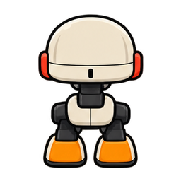
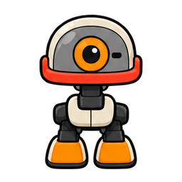
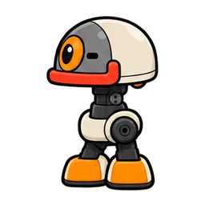

Nord · dos

Chaque direction possède trois images issues de la même planche, avec le même point d'ancrage. Aucun déplacement n'est simulé ici : cette page sert à contrôler les ressources graphiques.




L’animation des héros est décorative. Sur les terrains, la direction et le pas de Microduck proviennent exclusivement des traces d'exécution Python. Le bouton stoppe toutes les animations de cette page de recette.